Stampa
Recensioni, cartella stampa e fotografie ad alta risoluzione del tenore Massimo Giordano.
In copertina
Das Opernglas, giugno 2013
«Mein Weg ist voller Wunder» — il mio cammino è pieno di meraviglie: così la copertina. Dentro, cinque pagine d’intervista nel numero di giugno 2013, l’anno di Amore e Tormento, con le fotografie di Marisa Crawford.
Il titolo che la rivista mise all’intervista è una frase sua: da cantante comunichi te stesso, rovesci fuori quello che hai dentro. Nasce da una domanda sulla differenza fra lo strumentista e il cantante — una differenza che lui conosce da tutte e due le parti.
Copertina e cinque pagine, come uscirono. Intervista di Dr. Andreas Laska, fotografie di Marisa Crawford. © Das Opernglas, giugno 2013. Si aprono con un clic, oppure scarica l’intervista completa in PDF (6 pagine, 1 MB).
«Massimo Giordano, tenore italiano dalla voce luminosa… si è scaldato fino a un canto ardente ed espressivo, suonando genuinamente innamorato in «De’ miei bollenti spiriti».»
Vivien Schweitzer · The New York Times · 21 ottobre 2008 · La traviata, Metropolitan Opera, con Anja Harteros, Paolo Carignani
«Il giovane Rinuccio, il piacevole tenore Massimo Giordano, li esorta a rivolgersi al cittadino più scaltro della città, Gianni Schicchi.»
Anthony Tommasini · The New York Times · 23 aprile 2007 · Il trittico, Metropolitan Opera, James Levine, nuovo allestimento di Jack O’Brien
«Dwayne Croft era un Ford vivido e Massimo Giordano un Fenton di non comune virilità.»
George Loomis · International Herald Tribune / The New York Times · 22 agosto 2001 · Falstaff, Festival di Salisburgo, Lorin Maazel, allestimento di Declan Donnellan
«Massimo Giordano triompha également de l’impossible rôle de Samson, qu’il incarne avec beaucoup de vaillance, notamment dans un superbe “Air de la meule”.»
Emmanuel Andrieu · Opera Online · 22 ottobre 2020 · Samson et Dalila, Opéra national du Rhin
«Quando l’ho sentito suonare ho capito: così come suona lui, io non suonerò mai. Allora ho chiuso per sempre la custodia del flauto e mi sono dedicato soltanto al canto. Una decisione che non ho mai rimpianto.»
Sul concorso internazionale al Castello di Duino, dove sentì suonare un ragazzo della sua età: Emmanuel Pahud, oggi primo flauto dei Berliner Philharmoniker
«Non ne avevo voglia: per il canto non sentivo nessuna affinità, mi sembrava sempre una cosa troppo esteriore. Ma lui ha insistito finché non ho attaccato Core ’ngrato.»
A diciassette anni, poco prima del diploma di flauto. Pochi giorni dopo si presentò all’esame della classe di canto senza aver mai preso una lezione
«Sono convinto che Cavaradossi non creda neanche per un secondo alla grazia di Scarpia. Tosca è euforica e sogna il futuro insieme; lui sembra starle dietro perché non vuole distruggerle quel sogno — e sa benissimo che è tutto inutile.»
Sul terzo atto di Tosca. Il ruolo glielo aprì Franco Zeffirelli
«Aveva una paura vera di andare in scena. E quella paura la trasformava in forza espressiva.»
Su Franco Corelli. L’altro modello è Alfredo Kraus: «l’eleganza del suo canto, il suo modo di fraseggiare, hanno segnato un’epoca»
Nell’intervista racconta anche il primo concerto, pochi mesi dopo l’inizio degli studi, al posto di un tenore che aveva dato forfait, con Carlo Cossutta che si scaldava nel camerino accanto; il concorso di Spoleto del 1997 e la Clemenza di Tito che ne fu il premio; l’invito di Paolo Barbacini a Parma come seconda compagnia di Giuseppe Sabbatini nel Werther; e un desiderio che allora non si era ancora avverato: cantare Andrea Chénier.
Stampa
Cosa ha scritto la critica
«L’amoroso abbandono di Fenton (Massimo Giordano) per Nannetta (Dorothea Röschmann, anche lei fra le più applaudite), protagonisti del passaggio più lirico e struggente di tutta l’opera.»
Giuseppina Manin · Corriere della Sera · 8 aprile 2001 · Falstaff, Osterfestspiele di Salisburgo, Claudio Abbado
«A cominciare dal tenore Massimo Giordano, che è stato un protagonista assai ammirato.»
Luigi Bellingardi · Corriere della Sera · 14 settembre 1998 · Werther, Teatro Verdi di Terni, Teatro Lirico Sperimentale di Spoleto — il debutto
«Nel terzo atto Massimo Giordano dà un'ottima interpretazione di E lucevan le stelle.»
George Hall · The Guardian · 10 marzo 2013 · Tosca, Royal Opera House
«Debuttante alla San Francisco Opera, il tenore italiano Massimo Giordano è stato un Cavaradossi carismatico, giovanile e fresco.»
Mercury News · 18 novembre 2012 · Tosca, San Francisco Opera
«Soprattutto nel terzo atto, Massimo Giordano mostra la qualità e il colore della sua voce e ritrae in maniera convincente il personaggio.»
Neue Zürcher Zeitung · 2 ottobre 2012 · Tosca, Opernhaus Zürich
«Massimo Giordano si presenta quale affascinante e rude Maurizio, con scintillanti note acute.»
Manuel Brug · Die Welt · 18 febbraio 2014 · Adriana Lecouvreur, Staatsoper di Vienna
«Avec Massimo Giordano, le personnage de Foresto bénéficie d’une incarnation parfaitement réussie: voix souple de ténor lyrique, belle longueur de souffle, émission aisée dans les différents registres, parfaite maîtrise des difficultés techniques.»
Fabrice Malkani · Forum Opéra · 18 marzo 2018 · Attila, Opéra de Lyon
«C’est surtout l’interprétation qui surprend et séduit: nous n’avions pas le souvenir d’une telle probité du style, d’un tel soin de la ligne chez le ténor italien.»
Antoine Brunetto · Forum Opéra · 11 febbraio 2018 · Werther, Opéra national du Rhin
«Nicht weniger imponierend ist hier Massimo Giordano als Don Carlos, der mit dramatischer Deklamation agiert.»
Alexander Walther · Online Merker · 28 ottobre 2019 · Don Carlos, Oper Stuttgart
«Giordano looks and sounds the part: young and handsome, he can embody the fervent swagger and heroic self-belief of the painter, and this demeanour is matched by a warm, smooth tone and firm vocal weight.»
Claire Seymour · Opera Today · marzo 2013 · Tosca, Royal Opera House
«Il tenore italiano Massimo Giordano canta Des Grieux con una dizione nitida e, nei momenti migliori, un suono squillante. […] È trascinante nell’aria in cui implora il capitano della nave di Manon di portarlo in America con lei.»
George Loomis · The New York Times · 21 aprile 2014
«Massimo Giordano, nell’aspetto e nella voce il perfetto tenore italiano, dotato di una voce commovente e facile in tutti i registri, calda e insieme virile.»
Frederik Hanssen · Der Tagesspiegel · 18 aprile 2014
«Massimo Giordano è un Cavaradossi virile e forte, che coltiva il ruolo con nobiltà e canta con un’esatta differenziazione dell’espressione.»
Karlheinz Roschitz · Kronen Zeitung · 19 gennaio 2014
«Massimo Giordano incarna perfettamente il personaggio di Des Grieux, con eleganza di fraseggio e passione.»
Stefano Nardelli · Il giornale della musica · 12 aprile 2014
Agenzia
Sulle agenzie
- 21 giu 2025
Festival Cipro con Quartetto Scala, Giordano e Calzi
Sulla prima edizione del Minthis Music Festival, ideato e diretto da Giordano. «Cipro è una realtà fortemente segnata dall’interesse per la musica classica.» ANSA - 2 set 2014
Stop tenore Giordano, intervento a tibia
Operazione a Ekaterinburg dopo l’incidente del 2012. Torna in scena il 1° novembre all’Opéra national de Paris come Cavaradossi. ANSA - 29 ago 2013
Tenore Giordano «apre» Staatsoper Vienna
Alfredo nella Traviata, 3 settembre 2013, Marco Armiliato, inaugurazione della stagione 2013/14. ANSA
Sulla carta
World’s Best Tenors
Giordano è uno dei quarantaquattro tenori ritratti in World’s Best Tenors, fotografie di Johannes Ifkovits con la stilista Evelyn Rillé, Opera Rifko Verlag, 2016, 304 pagine. Ogni cantante è stato fotografato sul proprio do di petto e ha scritto della propria carriera. Il volume va da Plácido Domingo, José Carreras, René Kollo e Peter Schreier fino a Jonas Kaufmann, Juan Diego Flórez, Roberto Alagna, Piotr Beczała e Rolando Villazón.

Per teatri e stampa
Cartella stampa
Biografia in tre lunghezze, elenco del repertorio e fotografie ad alta risoluzione, libere da usare con il credito del fotografo.
- BiografiaCorta, media e lunga, su questo sito
- RepertorioElenco completo dei ruoli con i teatri
- FotografieFile ad alta risoluzione su richiesta: press@massimogiordano.com
Biografia, repertorio e cinque ritratti ad alta risoluzione, inviati in risposta.
Se il tasto non fa niente, scrivi a press@massimogiordano.com.
Documenti
Biografia e repertorio in PDF
Biografia in tre lunghezze e repertorio completo, pronti da stampare.
- BiografiaScarica · PDF, 249 KB
Tre lunghezze: 60 parole, 250 parole, completa, con la cronologia anno per anno - RepertorioScarica · PDF, 237 KB
I ruoli per compositore, con i teatri in cui sono stati cantati
Fotografie
Fotografie ad alta risoluzione
Pronte per la stampa, fino a 5760×3840 pixel. Libere per uso editoriale legato a concerti e recite, con il credito fotografico.
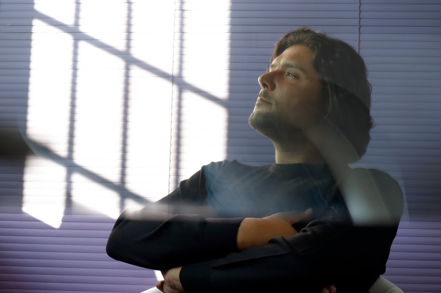
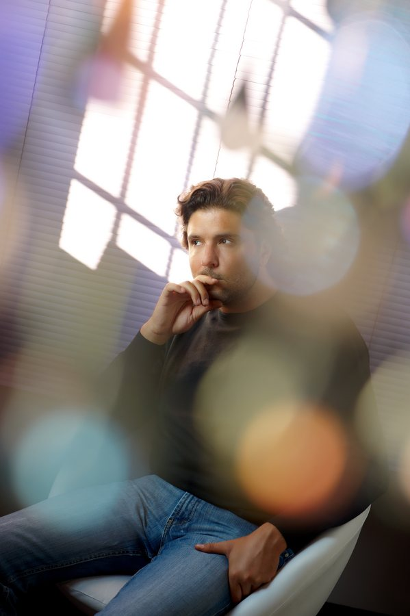

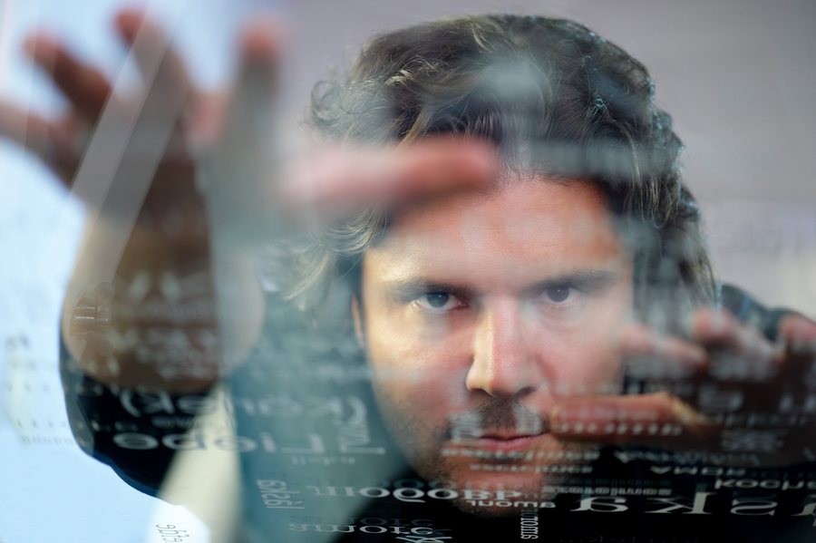


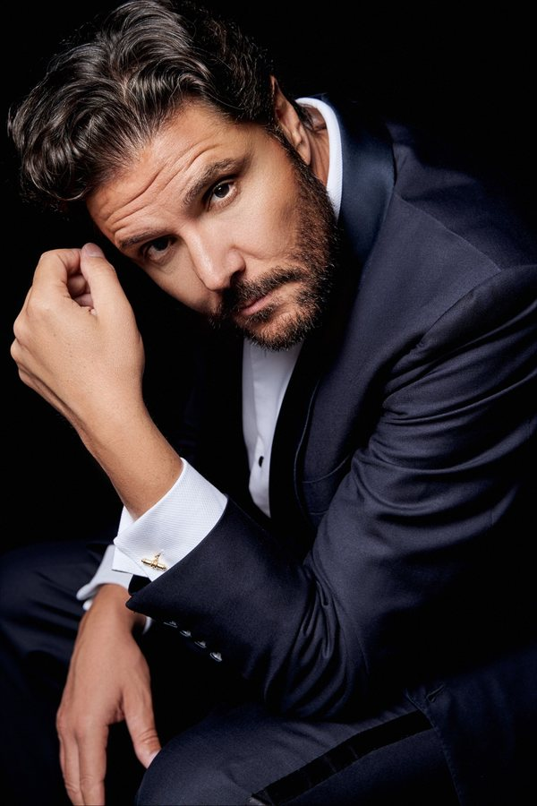
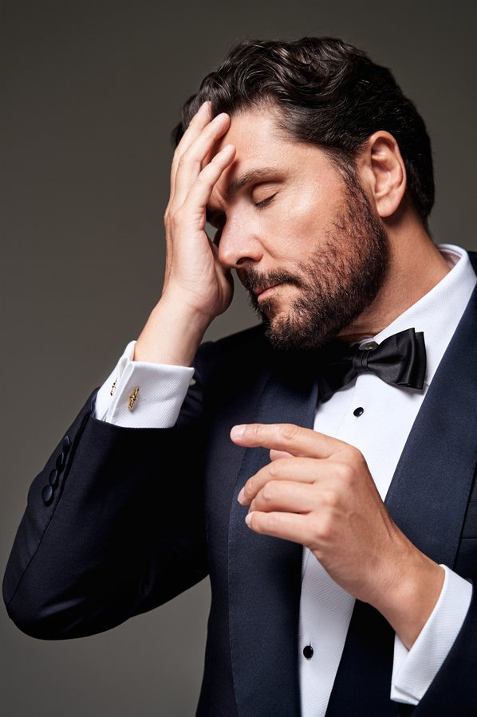

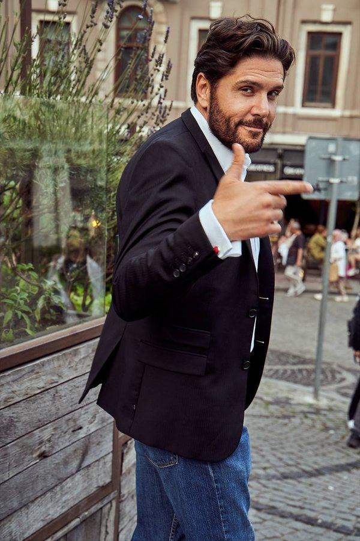

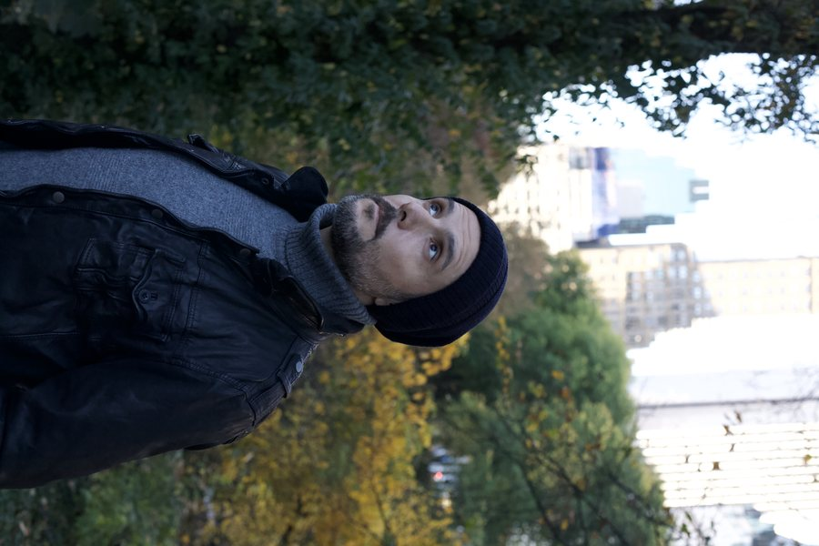

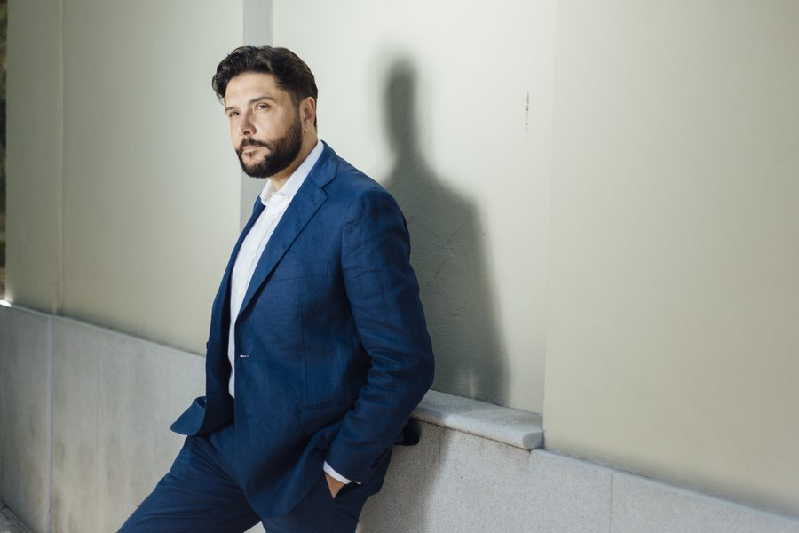


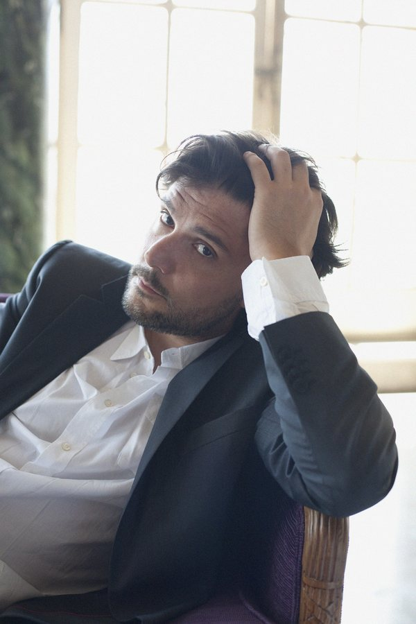


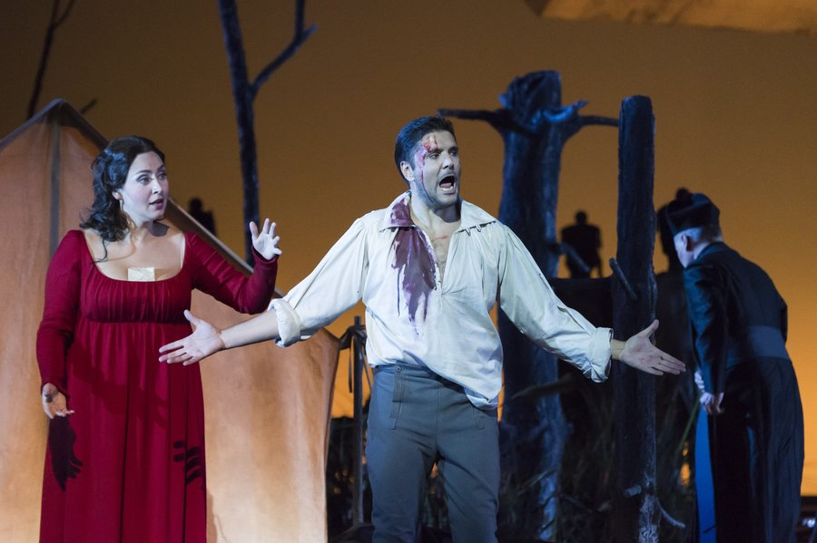
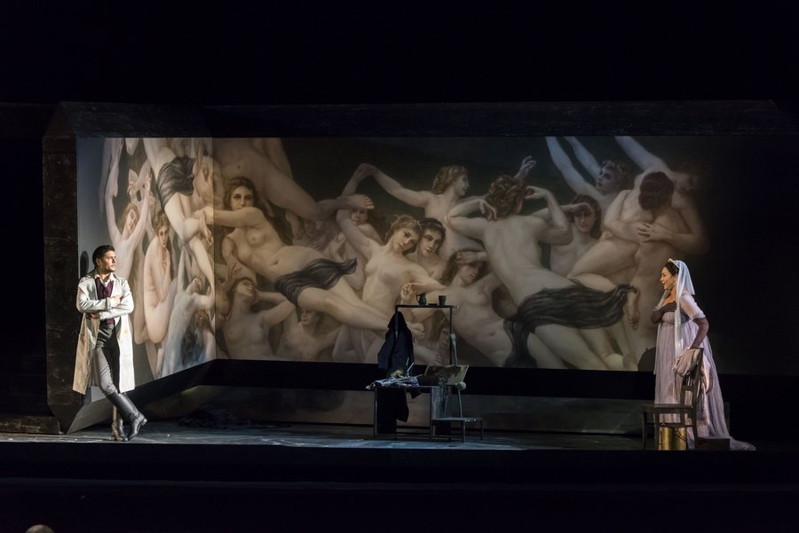


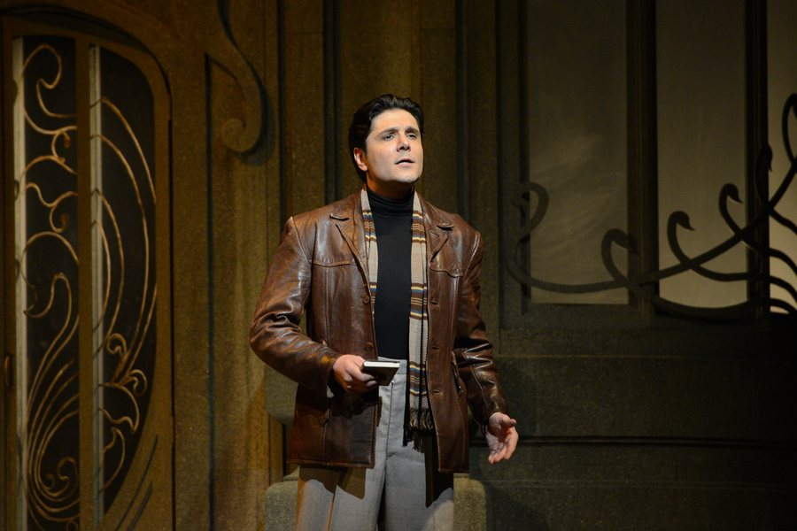

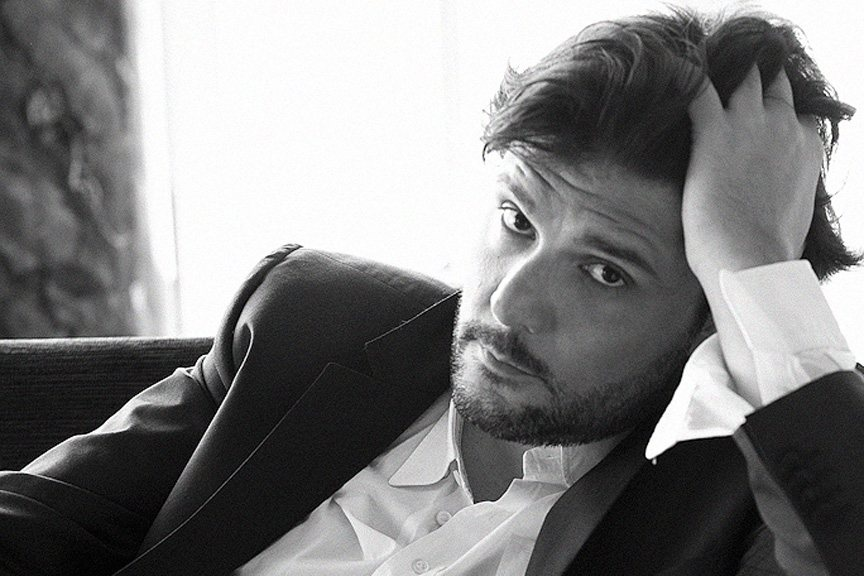